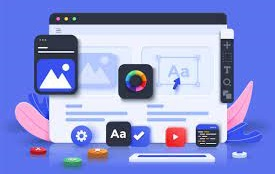

Cégünk kiemelkedő weboldalakat tervez és fejleszt korszerű design elemekkel és felhasználóbarát felületekkel. Minden weboldalunkat úgy alkotjuk meg, hogy az vevőit elbűvölje és az üzleti célokat hatékonyan támogassa. Az egyedi weboldal készítés a digitális jelenlét és az online élmény egy magasabb szintjét kínálja ügyfeleinknek. Célunk, hogy minden egyes projektet egyedi élménnyé varázsoljunk, kiemelve az ügyfél márkáját és céljait.
Az egyedi weboldalak készítése nem csupán technikai folyamat, hanem egy kreatív utazás, ahol minden részlet az ügyfél személyiségét és vállalkozásának egyediségét tükrözi. Legyen szó vállalkozások bemutatásáról, termékek értékesítéséről vagy online jelenlét maximalizálásáról, az egyedi weboldalak lehetőséget teremtenek a kreativitásra és hatékonyságra egyaránt.
Célunk olyan mobilalkalmazások létrehozása, amelyek nemcsak az ügyfeleink igényeire szabottak, hanem felhasználóik számára is könnyen kezelhetőek és magával ragadóak. Legyen szó iOS-ről vagy Androidról, minden platformra kiváló minőségű megoldásokat nyújtunk.
A mobilalkalmazás készítése olyan dinamikus folyamat, amely a digitális térbe való mélyebb behatolásra és az ügyfélkapcsolatok továbbfejlesztésére összpontosít. A szolgáltatásunk minden egyes lépése célja, hogy ügyfeleinknek kiemelkedő, felhasználóbarát és innovatív mobilalkalmazásokat biztosítson.
A mobilalkalmazások készítése nem csupán egy egyszerű technikai folyamat, hanem egy olyan stratégiai lehetőség, amely által az ügyfél kapcsolatokat és az üzleti eredményeket is növelni lehet. Az innovatív és felhasználóbarát alkalmazások segíthetnek az ügyfélhűség és az elkötelezettség erősítésében, valamint az üzleti növekedés támogatásában.
Az egyedi szoftver készítése az üzleti folyamatok optimalizálásának és a specifikus igények kielégítésének kiváló módja. A szolgáltatásunk egy átfogó folyamatot követ, amely biztosítja az ügyfeleknek a pontosan az ő igényeikre szabott, hatékony és innovatív szoftvermegoldást.